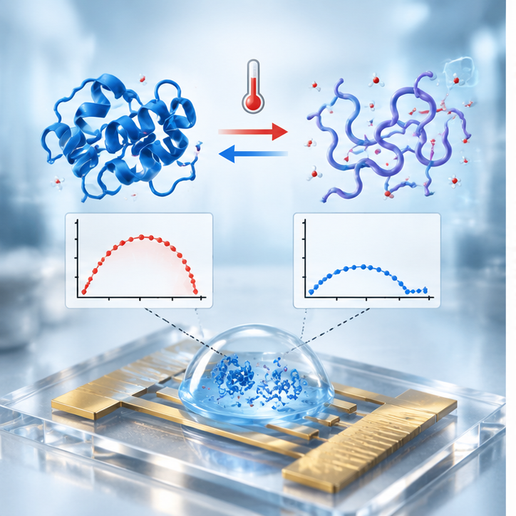
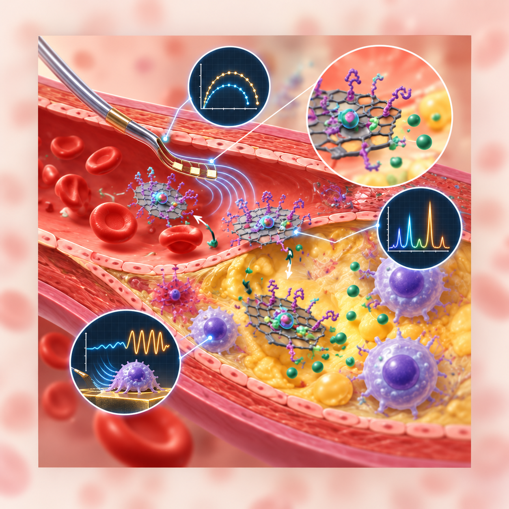
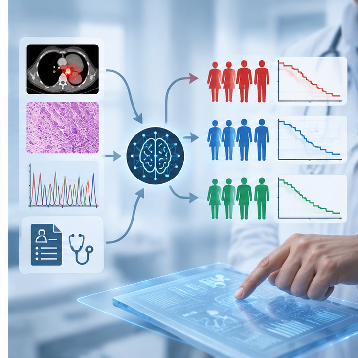
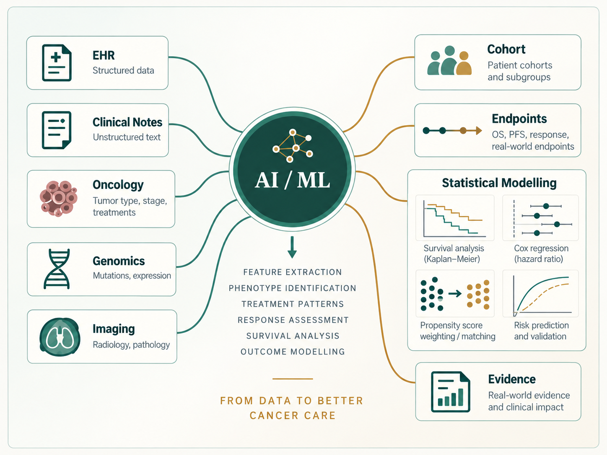
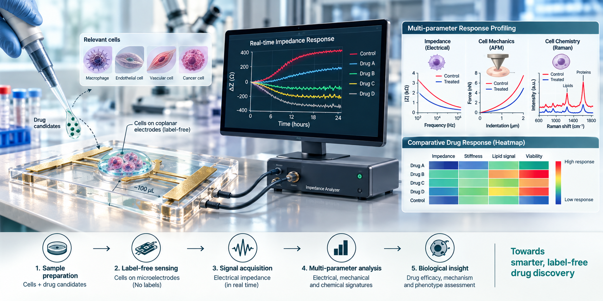

Disease and patient context
Framing biomedical questions through physiology, diagnosis, therapeutics and clinical relevance.
Senior Clinical Scientist - nference Labs Pvt. Ltd.
Physician-Scientist | Molecular Biophysics | Biosensing | Biomedical Engineering | Clinical Research & Real-World Evidence
From molecular mechanisms to clinical evidence.
I bridge clinical problems with molecular and cellular mechanisms by developing quantitative sensing systems that capture biological change as measurable signals, resolve underlying mechanisms, and translate those signals into mechanistic insight and clinically meaningful evidence.
From biophysical mechanisms to quantitative sensing of disease pathology and therapeutic response.
My research spans protein biophysics, label-free electrical impedance sensing, microfluidic biomedical systems, computational approaches and real-world clinical data science.
Clinical training anchors the questions. Experimental biophysics and engineering provide a language for measurement. Clinical data science extends that reasoning toward longitudinal patient evidence.
Framing biomedical questions through physiology, diagnosis, therapeutics and clinical relevance.
Interrogating proteins, interfaces and cells through electrical, structural and microscale systems.
Transforming fragmented health data into clinically coherent cohorts, endpoints and outcomes.
A research trajectory connecting mechanistic biological measurement with clinically interpretable evidence.
Biophysics → Engineering → Computation → Clinical Translation
Each aspect examines a distinct biological scale while preserving a common logic: mechanism, measurable signal and scientific interpretation.
Understanding how molecular perturbations reshape the electrical, structural and interfacial states of proteins.
Developing electrical measurements that transform molecular and cellular processes into interpretable quantitative signals without conventional molecular labels.
Engineering controlled microscale environments for biomedical measurement, manipulation and therapeutic evaluation.
Transforming heterogeneous longitudinal clinical information into clinically coherent cohorts, endpoints and real-world evidence.
Selected advances in biological measurement, translational sensing and microscale engineering.
Developed and applied non-Faradaic impedance approaches for detecting electrical changes associated with protein denaturation and structural transition.
Extended real-time NFEIS into dynamic thermal perturbation, using impedance hysteresis to examine metastability and irreversibility in protein unfolding.
Used Nf-EIS with complementary Raman and circular dichroism validation to investigate protein photolysis and silver nanoparticle-mediated protection.
Integrated electro-mechanochemical signals into an in-vitro system for evaluating anti-atherosclerotic drug response without molecular labels.
Investigated a graphene oxide–gelatin nanocarrier for pH-responsive atorvastatin delivery against atherosclerotic plaque.
Demonstrated enhanced dielectric properties and lower-voltage droplet manipulation using a GO–PDMS composite.

Thermal unfolding captured through electrical hysteresis.
Explore the study
pH-responsive nanocarrier delivery interpreted through biological and signal-level response.
Explore the study
Translating longitudinal EHR signals into oncology phenotypes, RECIST-informed response assessment, endpoints and decision-ready real-world evidence.
Explore the frameworkEight peer-reviewed studies spanning biophysics, sensing, biomaterials and microfluidics.
Senior Clinical Scientist · nference Labs Pvt. Ltd.
I apply clinical reasoning and quantitative methods to longitudinal healthcare data, with emphasis on cohort design, clinical phenotyping, treatment-line reconstruction, endpoint definition, comparative-effectiveness research and validation of AI-derived clinical information.
My current work explores how structured clinical data, narrative documentation and AI-assisted abstraction can be integrated while maintaining temporal validity, clinical interpretability and methodological rigor.

Methods are selected for the scientific question—not treated as ends in themselves.

A translational biosensing platform for quantifying therapeutic response through label-free electrical and biophysical signatures in disease-relevant cellular models.
Disease · diagnosis · physiology · therapeutics · patient care
First class with distinctionBiosensors · microfluidics · medical electronics · biomaterials · molecular imaging · quantitative methods
Institute Silver Medalist · CGPA 9.58/10Protein biophysics · electrical impedance · interfacial phenomena · label-free sensing
CGPA 9.75/10Real-world evidence · clinical AI · oncology · longitudinal outcomes
International Conference on Frontiers in Translational Bioengineering for Healthcare, Ranchi, India.
48th FEBS Congress, Rome, Italy.
IEEE Xplore 5NANO conference proceedings.
ACS Spring Meeting, American Chemical Society, Indianapolis, United States.
Build interpretable bridges between mechanistic biomedical measurement and rigorous clinical evidence—across molecules, devices, data and patients.
I welcome academic and translational collaborations in protein biophysics, label-free biosensing, biomedical platforms, clinical AI and oncology real-world evidence.